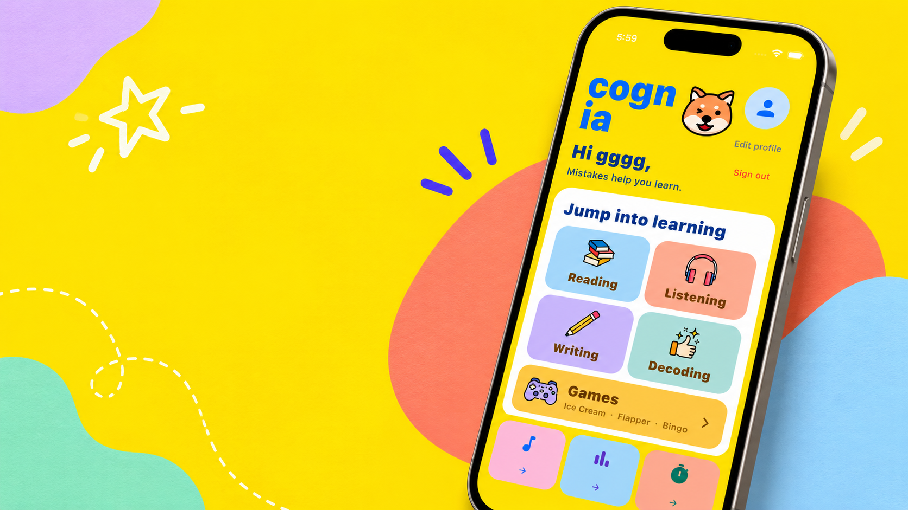

AI PRODUCT · INTERACTION · BUILDING
我做的
项目。
四个项目，关于学习、搜索、知识和一点点好玩的实验。
01 — FEATUREDCOGNIA

TEAM PROJECT / 2025CHILDREN’S ENGLISH LEARNING APP
CognIA
一个让孩子愿意打开的英语学习 App。负责学习模块、交互设计，以及前后端集成。
02—04 — MORE WORKSMALL COLLECTION
持续做一些
有用又有趣的东西。